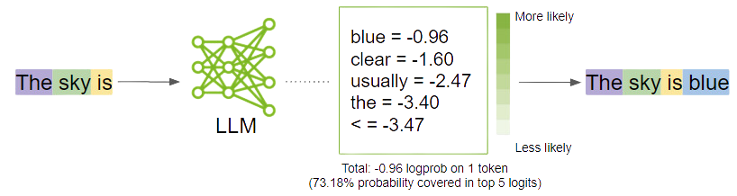

Supervisado
Aprende con ejemplos y respuestas conocidas.
Ejemplo: clasificar correo como spam o no spam.01 FUNDAMENTOS
Entender lo suficiente para explorar la inteligencia artificial con confianza, hacer buenas preguntas y revisar sus resultados.
Comenzar el recorrido ↓01 / 08 UNA IDEA PARA EMPEZAR
Sistemas diseñados para realizar tareas que asociamos a capacidades humanas.
Algunos identifican patrones o hacen estimaciones; otros producen textos, imágenes o sonidos a partir de una petición.
Una respuesta que parece razonada no demuestra que el sistema piense o comprenda como una persona.
02 / 08 FORMAS DE APRENDER
Tres ideas para entender cómo pueden aprender distintos sistemas.
Aprende con ejemplos y respuestas conocidas.
Ejemplo: clasificar correo como spam o no spam.Busca agrupaciones o patrones sin etiquetas previas.
Ejemplo: agrupar respuestas ficticias por temas.Prueba acciones y recibe recompensas según un objetivo.
Ejemplo: aprender a llegar a una meta en un juego.En un LLM: suelen combinarse etapas autosupervisadas y supervisadas; algunos también usan aprendizaje por refuerzo.
03 / 08 LA CALCULADORA DE LETRAS
Un modelo de lenguaje genera una secuencia a partir del contexto. Una continuación probable no tiene por qué ser verdadera.

04 / 08 LÍMITES Y SESGOS
Una respuesta convincente puede contener errores, omisiones o estereotipos.
Sus respuestas se apoyan en patrones aprendidos durante el entrenamiento y en el contexto que recibe. Las fuentes y herramientas añadidas también pueden influir en el resultado.
Una respuesta puede sonar segura y contener datos o referencias incorrectas.
Puede presentar una perspectiva parcial o dejar fuera experiencias relevantes.
La pregunta docente: ¿qué podría estar equivocado o no encajar en mi aula?
05 / 08 HUMAN AUGMENTATION
Tu experiencia permite orientar la tarea, reconocer una buena respuesta y detectar lo que no funciona.
La IA propone borradores y alternativas; el profesorado revisa y decide qué llega al aula.
06 / 08 DATOS Y LUGAR DE PROCESAMIENTO
Un documento puede revelar más de lo que vemos. Y el lugar desde el que lo abrimos no siempre es donde se procesa.
Una aplicación instalada puede enviar datos a la nube. Para practicar, utiliza material público, ficticio o autorizado.
07 / 08 MARCO NORMATIVO Y ORIENTACIONES
De Europa a Galicia: una norma vigente, una orientación y un anteproyecto tienen alcances distintos.
Protección de datos y reglas para sistemas de IA, con aplicación gradual según el caso.
Complementan el marco de protección de datos y regulan aspectos de la función educativa.
El anteproyecto propone reglas para IA educativa. Aún no es una ley aprobada.
Como docente: revisa la finalidad y los datos, utiliza herramientas autorizadas y consulta ante cualquier duda.
08 / 08 PARA LLEVARSE
Antes de pasar a la práctica, dedica cinco minutos a contarnos qué experiencias y necesidades trae el grupo.
Responder la encuesta ↗Volver al recorrido del cursoEl contenido original de este recurso es obra de David Rodríguez y se comparte bajo la licencia CC BY-NC-SA 4.0.
Se permite compartir y adaptar citando la autoría, enlazando la licencia e indicando los cambios, sin uso comercial. Las adaptaciones deben distribuirse bajo la misma licencia o una compatible.
Los materiales de terceros pueden tener derechos y condiciones propias.